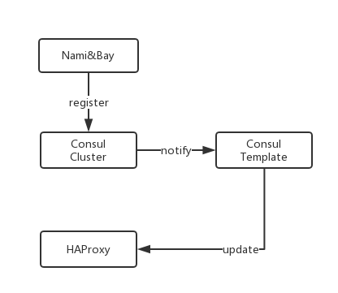
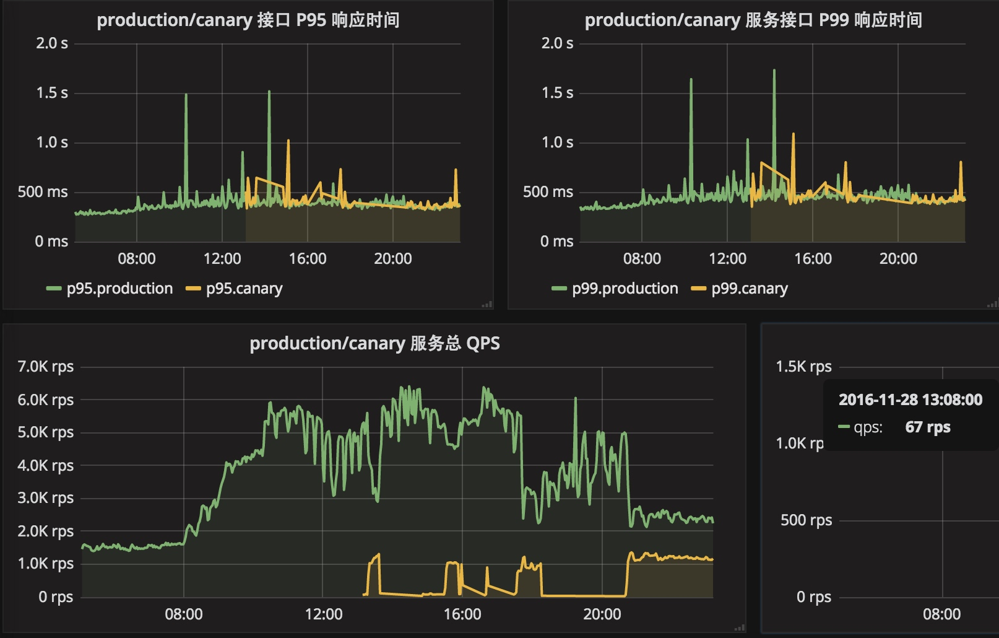

金丝雀发布
金丝雀部署（Canary Deployments）在知乎落地差不多一年时间，通过金丝雀避免了很多线上的问题，相比之前的发布模型，极大降低了部署的风险。知乎是非常推崇 Devops 的公司，金丝雀发布作为 Devops 一种实践自然不会落下。但是由于基础设施变得越来越抽象和复杂，理解整个部署的工作流程已经变得比较困难，正好有机会给新的同事科普一下金丝雀发布的架构。
相传上个世纪煤矿工人在作业时，为了避免瓦斯中毒会随身带一只金丝雀下到矿洞，由于金丝雀对二氧化碳非常敏感，所以看到金丝雀昏厥的时候矿工们就知道该逃生了。[1]
金丝雀发布就是用生产环境一小部分流量验证应用的一种方法。从这个名字的由来也可以看到，金丝雀发布并不是完美的，如果代码出现问题，那么背用作测试的小部分流量会出错，就跟矿坑中昏厥的金丝雀一样。这种做法在非常敏感的业务中几乎无法接受，但是当系统复杂的到一定程度，错误无法完全避免的时候，为了避免出现更大的问题，牺牲一小部分流量，就可以将大部分错误的影响控制在一定范围内。
金丝雀发布的步骤
一个典型的金丝雀发布大概包含以下步骤[2]：
- 准备好发布用的 artifact
- 从负载均衡器上移除金丝雀服务器
- 升级金丝雀服务器
- 最应用进行自动化测试
- 将金丝雀服务器加入到负载均衡列表中
- 升级剩余的服务版本
在知乎，负载均衡器采用的 HAProxy，并且依赖 Consul 作服务注册发现。而服务器可能是一台物理机也可能是 bay 上一个抽象的容器组。

- 对于物理机，我们可以单独为其配置一个一台独立的服务器，通过在 HAProxy 上设置不同于 Production 服务器的权重来控制测试流量。但是这种方法不够方便，做自动化也难一些
- 对于容器相对简单，我们复制一个 Production 版本的容器组，然后通过控制 Production 和 Canary 容器组的数量就可以控制流量。
整个过程是部署系统在中间协调，当我们上线发布完成，部署系统会移除金丝雀服务器，让应用回到 Normal 状态。
如果遇到问题需要回滚，只需要将金丝雀容器组从 HAProxy 上摘掉就可以，基本上可以在几秒内完成。
HAProxy
在整个金丝雀发布的架构中，HAProxy 是非常重要的一个组件，要发现后端的服务地址，并动态控制金丝雀和线上的流量比例。部署时我们并不会直接操作 HAProxy，而是更新 Consul 上的注册信息，通过事件广播告诉 HAProxy 服务地址有变化，这一过程通过 consul-template 完成。

HAProxy 自己也会注册到 Cosnul，伪装成服务的后端被调用，而服务自身则注册成 服务名 + --instance，在我们内部的 Consul 控制台可以看到。
每个服务都有自己独立的 HAproxy 集群，分布在不同的机器上，每个 HAProxy 只知道自己代理的服务的地址。这样做的好处是单个 HAProxy 崩溃不会影响业务，一组 HAProxy 负载高不会把故障扩散到整个集群。另外附带的一个好处是当我们更新服务注册地址时，不会 reload 整个 HAProxy 集群，只要更新对应的 HAProxy 实例就可以，一定程度上可以规避惊群问题。
HAProxy 的地址通过客户端服务发现获得，客户端发现多个 HAProxy 地址并可以做简单的负载均衡，将请求压力分摊到多个 HAProxy 实例上。
采用类似方案的公司是 Airbnb，不过他们的做法是把 HAProxy 作为一个 Agent 跑在服务器上，HAProxy 更靠近客户端[3]。
金丝雀发布的监控
有了金丝雀发布后，我们还得能区分金丝雀和线上的监控数据，以此判断服务是否正常。
由于有了 zone 和 tzone 框架对监控的支持，这件事推起来相对简单。我们在部署时将服务当前所在的环境注入到环境变量中，然后根据环境变量来决定指标的名称。
比如一个正常的指标名称是:
production.span.multimedia.server.APIUploadHandler_post.request_time
在金丝雀环境中的名称则是:
canary.span.multimedia.server.APIUploadHandler_post.request_time
最后我们可以在 Halo 对比服务在金丝雀和生产的表现有何差别：

Reference
[1] 金丝雀发布的由来: https://blog.ccjeng.com/2015/06/canary-deployment.html
[2] 在生产中使用金丝雀部署来进行测试: http://www.infoq.com/cn/news/2013/03/canary-release-improve-quality
[3] Service Discovery in the Cloud: http://nerds.airbnb.com/smartstack-service-discovery-cloud/